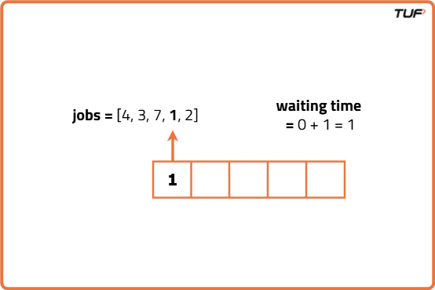
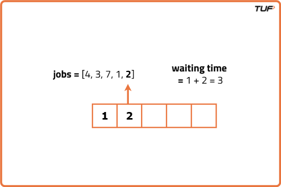
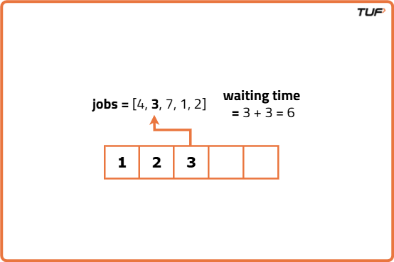
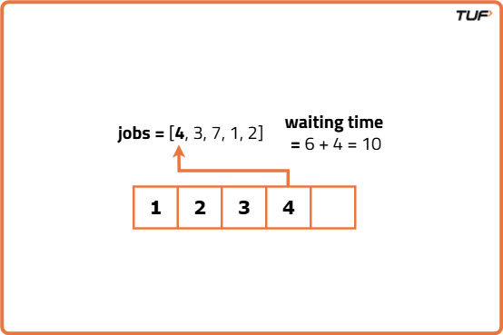
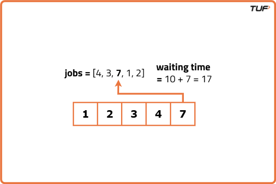

Shortest Job First (or SJF) CPU Scheduling
Problem Statement: Given a list of job durations representing the time it takes to complete each job. Implement the Shortest Job First algorithm to find the average waiting time for these jobs.
Examples
Example 1:
Input:jobs = [3, 1, 4, 2, 5]
Output: 4
Explanation:
The first job that will be executed is of duration 1 and the waiting time for it will be 0.
After the first job, the next shortest job with a duration of 2 will be executed with a waiting time of 1.
Following the completion of the first two jobs, the next shortest job with a duration of 3 will be executed with a waiting time of 3 (1 + 2).
Then, the job with a duration of 4 will be executed with a waiting time of 6 (1 + 2 + 3).
Finally, the job with the longest duration of 5 will be executed with a waiting time of 10 (1 + 2 + 3 + 4). Hence, the average waiting time is calculated as (0 + 1 + 3 + 6 + 10) / 5 = 20 / 5 = 4.
Example 2:
Input: jobs = [4, 3, 7, 1, 2]
Output: 4
Explanation: The first job that will be executed is of duration 1, and the waiting time for it will be 0.
After the first job, the next shortest job with a duration of 2 will be executed with a waiting time of 1.
Following the completion of the first two jobs, the next shortest job with a duration of 3 will be executed with a waiting time of 3 (1 + 2).
Then, the job with a duration of 4 will be executed with a waiting time of 6 (1 + 2 + 3).
Finally, the job with the longest duration of 7 will be executed with a waiting time of 10 (1 + 2 + 3 + 4).
Hence, the average waiting time is calculated as (0 + 1 + 3 + 6 + 10) / 5 = 20 / 5 = 4.
Disclaimer: Here is the practice link to help you assess your knowledge better. It's highly recommend trying to solve it before looking at the solution.
Approach
Algorithm
- Sort the jobs in ascending order based on their durations. The jobs array will now contain the job durations arranged from shortest to longest.
- Initialise variables waitTime to 0 (waiting time for that particular job) and totalTime (total waiting time for all jobs).
- Iterate through each job in the sorted array. For each job, its waiting time is the sum of total time taken by all previous jobs. Update the total time taken by adding the duration of the current job to the total waiting time.
- After iterating through each job in the array, the average waiting is total waiting time divided by the number of jobs ie. length of the jobs array.After iterating through each job in the array, the average waiting is total waiting time divided by the number of jobs ie. length of the jobs array.
Dry Run





Code
#include <vector>
using namespace std;
// Class that implements Shortest Job First (SJF) scheduling
class ShortestJobFirst {
public:
// Function to calculate average waiting time
float calculateAverageWaitTime(vector<int>& jobs) {
// Sort jobs in ascending order (Shortest Job First)
sort(jobs.begin(), jobs.end());
float waitTime = 0; // Stores cumulative waiting time
int totalTime = 0; // Tracks elapsed execution time
int n = jobs.size(); // Number of jobs
// Iterate through each job to calculate waiting time
for (int i = 0; i < n; i++) {
waitTime += totalTime; // Add current total time to waiting time
totalTime += jobs[i]; // Execute current job
}
// Return the average waiting time
return waitTime / n;
}
};
int main() {
vector<int> jobs = {4, 3, 7, 1, 2};
cout << "Array Representing Job Durations: ";
for (int job : jobs) cout << job << " ";
cout << endl;
ShortestJobFirst sjf;
float ans = sjf.calculateAverageWaitTime(jobs);
cout << "Average waiting time: " << ans << endl;
return 0;
}
Complexity Analysis
Time Complexity: O(N logN + N) where N is the length of the jobs array. We sort the jobs array giving complexity O(N log N) and to calculate the waiting time we iterate through the sorted array taking O(N) complexity.
Space Complexity: O(1) as the algorithm uses only a constant amount of extra space regardless of the size of the input array. It does not require any additional data structures that scale with the input size.